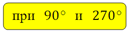
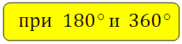
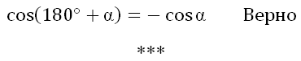
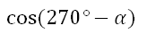
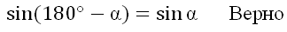

Здравствуйте, Дорогие друзья! В этой статье решил рассказать вам о формулах приведения. Относятся к разделу «тригонометрия». Суть их заключается в приведении тригонометрических функций углов к более «простому» виду. О важности их знания написать можно много. Этих формул аж 32 штуки!!!
Не пугайтесь, учить их не надо, как и многие другие формулы в курсе математики. Лишней информацией голову забивать не нужно, необходимо запоминать «ключики» или законы, и вспомнить или вывести нужную формулу проблемой не будет. Кстати, когда я пишу в статьях «… нужно выучить!!!» – это значит, что действительно, это необходимо именно выучить.
Если вы с формулами приведения не знакомы, то простота их вывода вас приятно удивит – есть «закон», при помощи которого это легко сделать. И любую из 32 формул вы напишите за 5 секунд.
Перечислю лишь некоторые задачи, которые будут на ЕГЭ по математике, где без знания этих формул есть большая вероятность потерпеть фиаско в решении. Например:
– задачи на решение прямоугольного треугольника, где речь идёт о внешнем угле, да и задачах на внутренние углы некоторые из этих формул тоже необходимы.
– задачи на вычисление значений тригонометрических выражений; преобразования числовых тригонометрических выражений; преобразования буквенных тригонометрических выражений.
– задачи на касательную и геометрический смысл касательной, требуется формула приведения для тангенса, а также другие задачи.
– стереометрические задачи, по ходу решения не редко требуется определить синус или косинус угла, который лежит в пределах от 90 до 180 градусов.
И это лишь те моменты, которые касаются ЕГЭ. А в самом курсе алгебры есть множество задач, при решении которых, без знания формул приведения просто не обойтись.
Так что же к чему приводится и как оговоренные формулы упрощают для нас решение задач?
Например, вам нужно определить синус, косинус, тангенс или котангенс любого угла от 0 до 450 градусов:
Формулы приведения:
угол альфа лежит пределах от 0 до 90 градусов
* * *
Итак, необходимо уяснить «закон», который здесь работает:
1. Определите знак функции в соответствующей четверти.
Напомню их:
2. Запомните следующее:

функция изменяется на кофункцию

функция на кофункцию не изменяется
Что означает понятие — функция изменяется на кофункцию?
Ответ: синус меняется на косинус или наоборот, тангенс на котангенс или наоборот.
Вот и всё!
Теперь по представленному закону запишем несколько формул приведения самостоятельно:
Данный угол лежит в третьей четверти, косинус в третьей четверти отрицателен. Функцию на кофункцию не меняем, так как у нас 180 градусов, значит:
Угол лежит в третьей четверти, косинус в третьей четверти отрицателен. Меняем функцию на кофункцию, так как у нас 270 градусов, значит:
Угол лежит в первой четверти, синус в первой четверти положителен. Не меняем функцию на кофункцию, так как у нас 360 градусов, значит:

Вот вам ещё дополнительное подтверждение того, что синусы смежных углов равны:
Угол лежит во второй четверти, синус во второй четверти положителен. Не меняем функцию на кофункцию, так как у нас 180 градусов, значит:
Проработайте мысленно или письменно каждую формулу, и вы убедитесь, что ничего сложного нет.
***
В статье на решение прямоугольного треугольника был отмечен такой факт – синус одного острого угла в прямоугольном треугольнике равен косинусу другого острого угла в нём. И наоборот – косинус одного острого угла в прямоугольном треугольнике равен синусу другого острого угла в нём. Вот вам и подтверждение этого с помощью формул приведения:
Конечно, определить значения углов можно и без формул приведения, по тригонометрической окружности. И если вы умеете это делать, то очень хорошо. Но поняв, как работают формулы приведения, вы сможете делать это очень быстро.
Данные формулы можно также выразить в табличной форме:
В дальнейшем, применяя свойство периодичности, четности (нечётности) вы без труда определите значение любого угла: 10500, -7500, 23700 и любые другие. Статья об этом в будущем обязательно будет, не пропустите!
Когда в решениях задач буду использовать формулы приведения, то обязательно буду ссылаться на эту статью, чтобы вы всегда смогли освежить в памяти представленную выше теорию. На этом всё. Надеюсь, материал был вам полезен.
С уважением, Александр Крутицких.
P.S: Буду благодарен Вам, если расскажите о сайте в социальных сетях.


{kind=link}
{kind=link}
{kind=link}
{kind=link}
{kind=link}
{kind=link}
{kind=link}
{kind=link}
{kind=link}
{kind=link}
{kind=link}
{kind=link}
{kind=link}
{kind=link}
{kind=link}
Спасибо.
Спасибо огромное за Ваш труд! Замечательный сайт! Очень много полезной, нужной информации!!!
Пожалуйста!
Спасибо, я бы хотела узнать о прикладных сторонах формул приведения. В жизне как используется?
При расчётах — проектировка механизмов, устройств, приборов. При расчётах, например, при раскройке мебельных листов ДСП, которые используются для изготовления мебели. Обычным людям в повседневной жизни они как бы не нужны.
Объясните пожалуйста как в первом практическом примере взялось 180°-30°?
Нам необходимо 150 представить (подвести) в той форме, чтобы было возможно применить формулы приведения. Я взял 180-30, можно было написать 90+60, это не важно, результат всё-равно будет один. Есть вопросы, пишите...
Cпасибо большое, наконец то доча с помощью вашего объяснения поняла тему, настолько все объяснено просто и доступно!
Спасибо большое за статью,все понятно,теперь не надо учить формулы,
Александр Крутицких спасибо вам! Всё понятно и доходчиво написано,еще раз огромное спасибо.
класс!!!
Автор, вы просто молодец, я очень вам благодарен.
Благодаря вам я наверстал упущенное!
Рад! Прилашаю
http://matematikalegko.ru/konkursi-na-matematikalegko/onlajn-marafon-zarabotaj-na-reshenii-zadach.html
Объясните,пожалуйста,почему в одном задании угол 180 градусов лежит во второй четверти,а в другом в третьей?
И вообще,я не понимаю как определять четверти,хотя это легко,но я не могу понять,почему,например угол в 90 градусов лежит во второй четверти?
Владислава, посмотрите как расположены четверти
matematikalegko.ru/formul...kix-funkcij.html
Изучите эту статью обязательно.
Углы 90, 180, 270, 360 являются границами четвертей. А вот угол 90-а уже лежит в четверти (в первой). Как определяется знак функции посмотрите в указанной статье.
Вот ещё
ege-study.ru/formuly-privedeniya/
Извините , не объясните , пожалуйста , в чем моя ошибка ?
sin (90 + a) = cosа . Данный угол лежит во второй четверти . Cos во второй четверти отрицательный . Так почему тогда в формуле нету знака минус перед cosa?
Николай, здравствуйте!
Мы рассматриваем функцию синуса угла во второй четверти. ИМЕННО синус во второй четверти положителен, потому и + перед косинусом. То есть оценивается начальная функция (от которой исходим).
То есть можно говорить об универсальном правиле без запоминания формул приведения :
Через П и 2П — функция не меняется, а знак в зависимости от четверти .
Через П\2 и 3П\2 функция меняется на кофункцию , при этом знак остается от изначальной функции ?
Почти )
С изменением функции на кофункцию всё верно. А знак зависит только от четверти исходной функции.
Через П\2 и 3П\2 функция меняется на кофункцию , при этом знак также в зависимости от четверти.
Например
ctg (3Пи/2-а)=tg a
Так как 3Пи/2, то функция меняется на кофункцию.
Так как котангенс в третьей четверти положителен, то знак +.
Все понятно . Спасибо большое за объяснение )
Спасибо Вам огромное! Все предельно просто и ясно изложено!